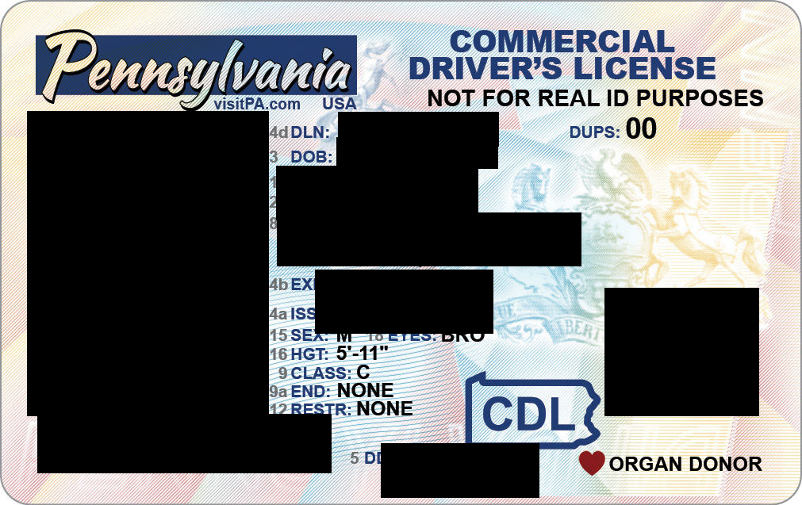
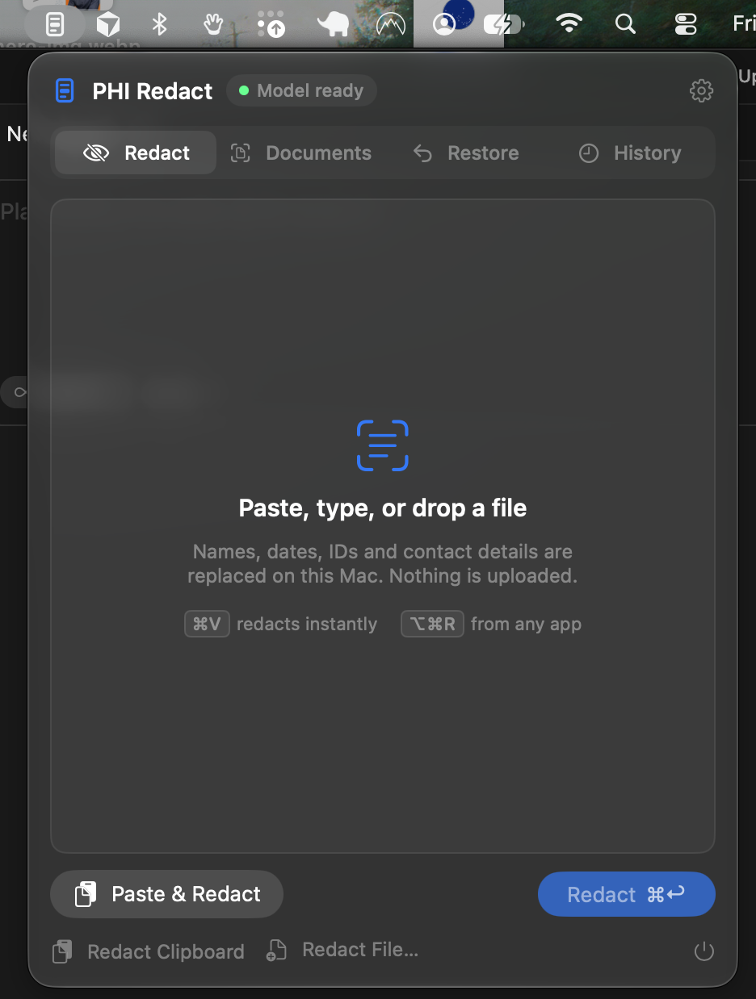
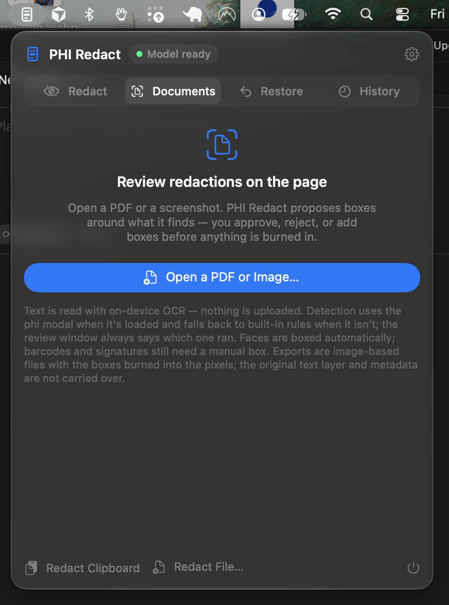
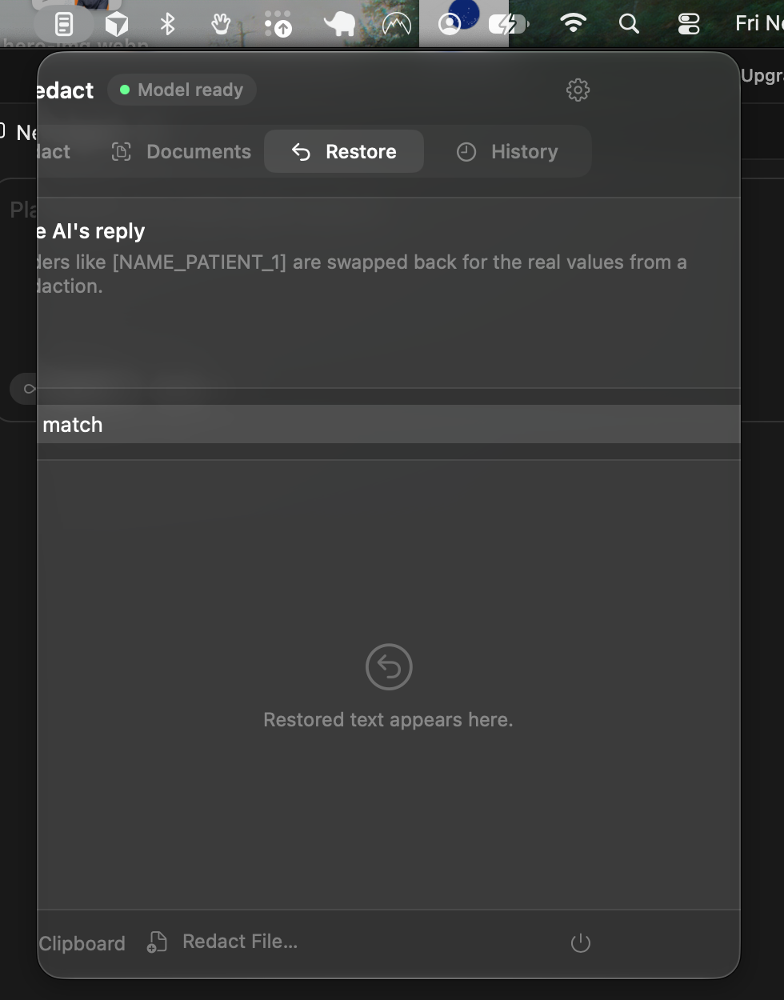
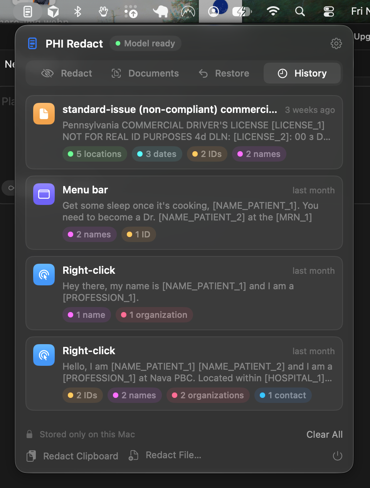

For the files on your Mac.
The documents that need redacting are rarely plain text. They are scanned forms, exported PDFs, screenshots, a photo of an ID. The Mac application reads them where they sit, proposes every redaction as a box you can inspect, and rewrites the file only when you say so. Nothing is uploaded — there is nowhere to upload to.

The application

Paste text, type, or drop a file. ⌘V redacts the clipboard instantly; ⌃⌘R works from any app. The original is untouched until you say so.

Open a PDF or image. PHI Redact proposes boxes around what it finds — approve, reject, or draw a box the model missed, before anything is burned in.

Paste an AI reply back in. Tokens like [NAME_PATIENT_1] are swapped for the real values from the redaction, so you can read the response without decoding it yourself.

Every session is logged locally. Names, IDs, organisations and contacts counted per entry — tap any row to restore its mapping.
How it works
Open a PDF or image
Drag the file in, or right-click it in the Finder. Born-digital PDFs are read from their text layer; scans and photos go through OCR. The original is not touched.
Step oneBoxes are proposed
Vision OCR reads the page, face detection finds the portraits — including the small second portrait printed on most licenses — and the redaction model finds the names, numbers and dates in the text.
Step twoYou review every box
Peek at what sits behind a box before you commit to it. Accept it, reject it, or draw a box the model missed. Nothing is final until this step is done — export is not even offered while proposals are waiting.
Your stepBurn-in, metadata stripped
Accepted boxes are burned into the pixels — the content is removed, not covered — and the exported file is written clean, with its metadata stripped.
Step fourThe particulars
Vision OCR
Apple’s on-device text recognition reads scans and photographs, so a picture of a form is as redactable as the form itself.
On-deviceFace detection
Portraits are found and proposed as boxes like any other finding — the photo on an ID is identifying information, and it is treated that way.
On-deviceTrue burn-in
Redactions are written into the image data. There is no annotation layer to lift, no original pixels hiding under a rectangle.
Not an overlayMetadata stripped
The exported file carries no EXIF, no document properties, no trace of what was removed or where it sat.
Clean exportReview-first by default
Automatic burn-in exists for those who want it. The default — and the design center — is a person confirming every box.
The controlEntirely on-device
OCR, face detection and the 11 MB model all run on the Mac holding the file. The application has no server to phone home to.
Offline